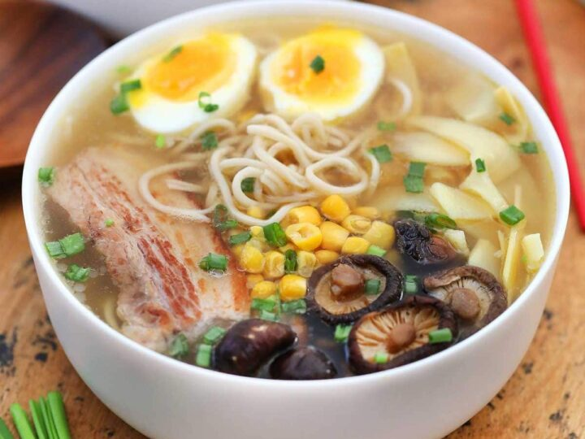

Ramen

Description
Ramen is a japanese noodle dish that has chinese origin
Ingredients for pork ramen
- tonkotsu pork broth
- ramen noodles
- enoki mushrooms
- green onions
- pork chasu
Steps to make pork ramen
- Make pork chasu
- Make pork broth
- Combine pork chasu, pork broth, and vegetables